News
Rishabh Pant undergoes plastic surgery to manage facial injuries after horrific car crash, MRI of brain and spine normal: Reports
....
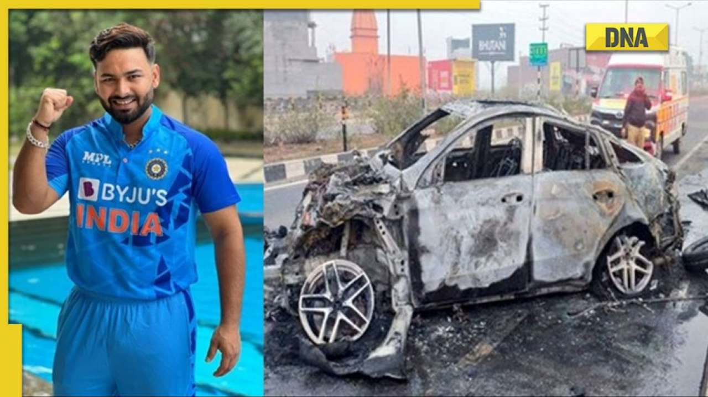
Indian wicketkeeper-batter Rishabh Pant has reportedly undergone plastic surgery to manage facial injuries he suffered in a car accident in Roorkee, Uttarakhand, on Friday, December 30, morning. In some good news for the cricketer, the MRI scan results of the brain and spine are normal.
Pant was severely hurt after his car crashed into the divider on the Delhi-Dehradun highway while he was traveling from Uttarakhand to Delhi. Following the impact of the collision, the young cricketer’s vehicle caught fire.
According to a report in ESPNcricinfo, the 25-year-old had to undergo plastic surgery to manage his facial injuries, lacerated wounds and abrasions. The report also stated that Pant’s MRI of the brain and spine are normal.
The website also stated that MRI scans of the badly injured cricketer’s ankle and knee have been postponed till tomorrow due to pain and swelling. As per the medical bulletin released by Max Hospital in Dehradun, where the cricket is being treated, Pant is "stable, conscious and oriented".
The bulletin stated that "prima facie, he had sustained multiple abrasions on right-hand forearm and leg, and lacerated wounds over forehead and near eyebrow, and multiple graze abrasions on the back"
Earlier in the day, it was reported that the young Delhi cricketer was alone in the vehicle when the accident took place. He had to break open a window to escape after his car caught fire. Pant informed the Uttarakhand Police that he dozed off while driving, and as a result of which his car crashed into the divider.
An official statement by Uttarakhand Police revealed that the accident took place at Mohammedpur Jat near Roorkee at around 5:30 am.
Pele, one of the greatest of all time, passes away
....
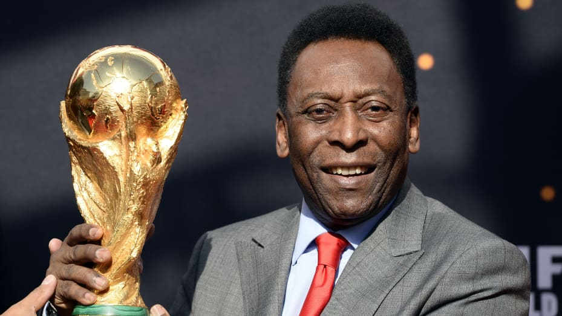
Brazilian football legend Edson Arantes do Nascimento, famously called Pelé, has passed away aged 82.
His agent Joe Fraga confirmed his death.
Widely regarded as one of soccer’s greatest players, Pelé spent nearly two decades enchanting fans and dazzling opponents as the game’s most prolific scorer with Brazilian club Santos and the Brazil national team.
Pele had been battling cancer for a while and recently, his health condition worsened during hospital stay to regulate his cancer medication, doctors had announced earlier this week.
Pele carried Brazil to soccer’s heights and became a global ambassador for his sport in a journey that began on the streets of Sao Paulo state, where he would kick a sock stuffed with newspapers or rags.
In the conversation about soccer’s greatest players, only the late Diego Maradona, Lionel Messi and Cristiano Ronaldo are mentioned alongside Pelé.
"We wanted to get a result"
- Babar Azam on his declaration on day five of first Test against New Zealand
....
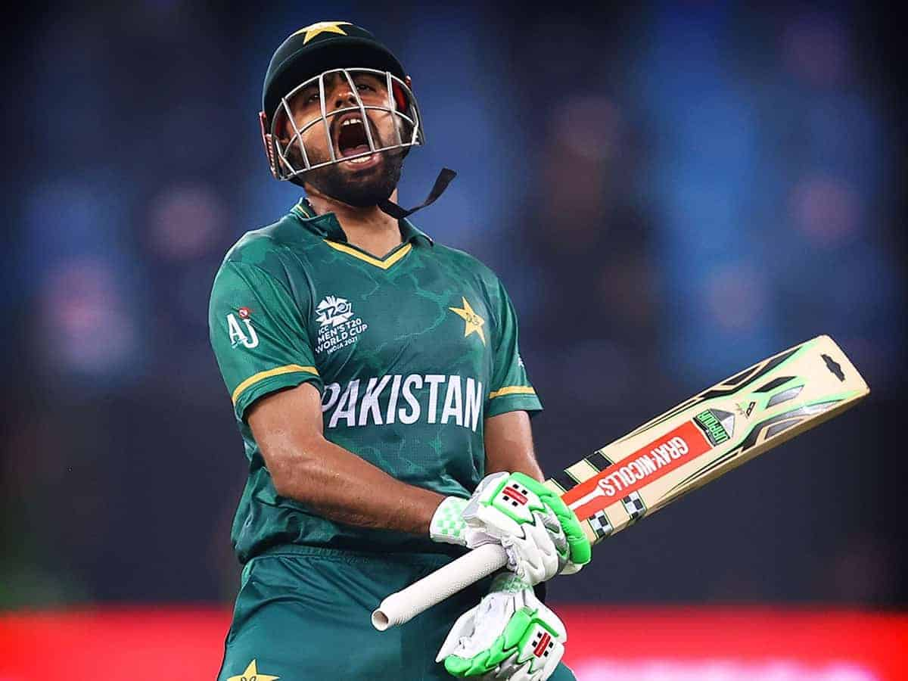
Pakistan captain Babar Azam rued bad light after the first Test against New Zealand in Karachi finished in a draw. The right-handed batter also felt their five-man bowling attack came together well in the first Test.
Pakistan declared at 311-8 in their second innings to set the Kiwis a target of 138 runs in 15 overs. While the tourists played aggressively and seemed on track for a 1-0 series lead, bad light forced the umpires to declare the result as a draw.
Speaking at the post-match presentation, Babar said Pakistan were keen for a result. The 28-year-old heaped praise on Saud Shakeel and Mohammad Wasim for playing positively when the hosts ran the risk of losing.
"As you know, we wanted to get a result, as I said at the toss, and we went for the declaration. But the light was not good enough, so it ended in a draw. Our fifth bowler is Salman Agha, he wasn't been feeling well. We missed him with the ball. So, I think our five-bowler attack is good. Wasim and Saud brought us back into the match. Credit to them for playing positive cricket."
Wasim joined hands with Shakeel when Pakistan were teetering at 208-7 with their lead of only 32. The pair put on a 71-run stand to extend Pakistan's lead to over 100 runs. The Kiwis declared with a first-innings lead of 174 after bowling Pakistan out for 438.
"It is the selectors, the coaches and the management, who should try to get Prithvi Shaw on the right track" - Gautam Gambhir
....
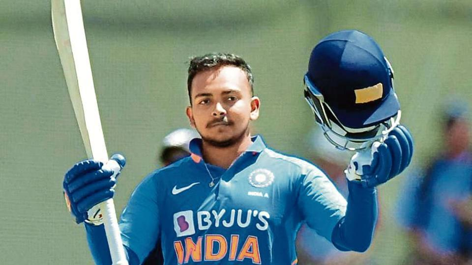
Former India batter Gautam Gambhir has opined that the coaches, selectors, and management will have to work in unison to get Prithvi Shaw back on track and into the scheme of things. The prodigal opening batter has been snubbed by the national side of late despite prolific numbers in domestic cricket.
Shaw made his Team India debut at the age of 19 after leading the nation to victory in the U-19 World Cup in 2018. He scored a century in his maiden outing and was on the radar as a backup opener as well.
However, an injury ahead of his first overseas tour in Australia and an ensuing year-long ban from the sport after failing a drug test pushed his career back.
While he has arguably redeemed himself with his performances, he has only been able to amass a handful of appearances since then.
Analyzing the debacle surrounding Shaw's selection snub, especially in the workload management era where bench players are tried and tested out explicitly, Gambhir said on Star Sports:
"What are coaches there for? What are selectors there for? Not just to select the team or probably do those throwdowns and make them ready for the game. Ultimately, it is the selectors, the coaches and the management, who should try and get these guys, especially someone like a Prithvi Shaw, on the right track."
He continued:
"That is one of the jobs of the management is. It is not only about preparing them for a game or helping them in the practice sessions. If that is the case, whether it is Rahul Dravid or the national selection chairman should have a word with him and show him the clarity and probably keep him around the group."
Shaw's last international appearance came in July 2021 during the tour of Sri Lanka. He made his T20I debut during the tour and was dismissed for a first-ball duck
"Can't look at anyone beyond Ishan Kishan" - Gautam Gambhir on Rohit Sharma's opening partner in ODIs
....
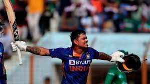
Former Indian opener Gautam Gambhir reckons there shouldn't be any doubts about Ishan Kishan opening the batting alongside Rohit Sharma in ODI cricket. Gambhir believes Kishan's double hundred against Bangladesh in Mirpur makes him the frontrunner for the role.
Kishan, who replaced Rohit Sharma for the third ODI against Bangladesh earlier this month, cracked the fastest double hundred in the format. The left-handed batter became the fourth Indian batter to hit a double ton in ODIs. He achieved this in 126 balls, helping the visitors reach 409 in 50 overs.
Speaking on ESPN Cricinfo, the 41-year-old revealed he is surprised to see that people are still debating whether Ishan Kishan should open. The Delhi-born former cricketer also noted that the 24-year-old can keep wickets and said:
"I'm amazed we're discussing this because someone's got a double-hundred in the previous innings. The discussion is over. It has to be Ishan Kishan. Someone who can get a double-hundred in those conditions against a reasonable attack - especially at their home - should play."He got what 200 by the 35th over mark? You can't look at anyone beyond Ishan Kishan."
Gambhir continued:
"He has to be given a longer run. He can also keep wickets as well, so he can do two jobs for you. If someone else had got a double hundred, I think we would've gone gung-ho over that individual, but it's not the case with Ishan Kishan. Because we still continue to talk about other players. For me, that debate is over."
The selectors have also dropped Rohit's long-time opening partner Shikhar Dhawan from the ODI squad to face Sri Lanka following a poor run of form. Instead, Shubman Gill and Ishan Kishan remain in the frame to bat at the top alongside Rohit, with the latter's 131-ball 210 making him the favorite.
"You've got to give a young boy at least one chance or a couple of chances" - Gautam Gambhir opines on Prithvi ShawGautam Gambhir.
Gambhir further claimed that a youngster like Prithvi Shaw deserves guidance in the right direction after a disciplinary issue in 2019 and a failed fitness test in March.
‘Ali was like a child’ When Pele kissed Muhammad Ali
....
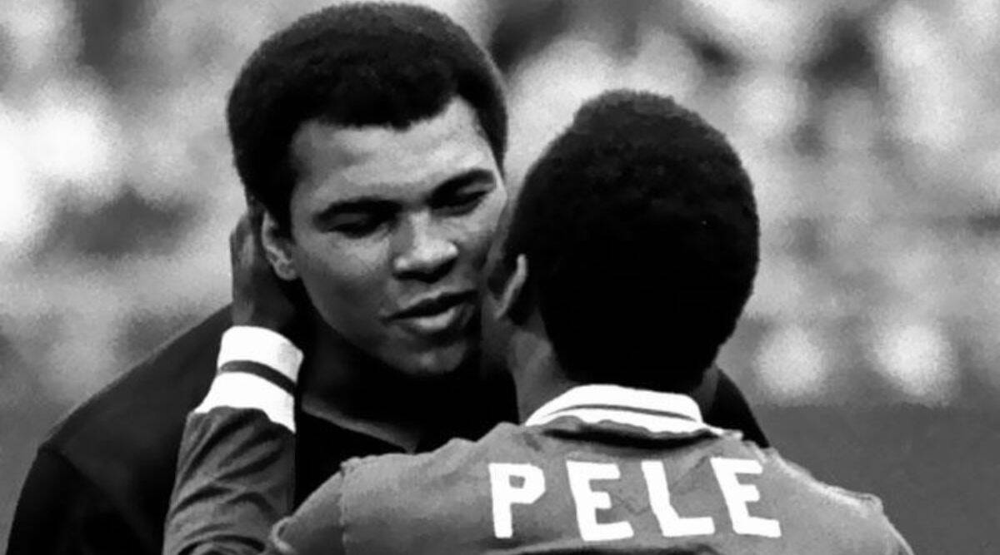
Two days before he met Pele, the ‘Greatest One’ Muhammad Ali leaned back on the ropes after being pounded by the challenger Ernie Shavers in New York. ’Gruesome, Barbarically-riveting,’ the journalist Frank Keating would write. As he lay there, beside him, in tears, was Bundini Brown, Ali’s famous sidekick, the originator of ‘float like butterfly, sting like bee’ line and who would eventually fall out of inner circle after he sold Ali’s championship belt to a barber for 500$. The 35-year old Ali would stir from the ropes to say, “I am tired, I am tired, that’s it: The End”. Still in the ring, he would comb his hair on live television and shortly after washing up, Ali would tell reporters: ‘Well, 10 million dollars might force me out for one more fight”. Unfortunately, he would fight four more times, including the 1980 battering he took from the fist of Larry Holmes believed to have caused him brain damage.
Luckily that week in New York, another ‘Greatest’ Pele had decided to call it a day for good. Ali would be there to meet him for the first time, even as New York and the world bid goodbye to Pele. Both had come from deprived upbringing, two supreme black athletes, one a poster boy for anti-establishment, and the other for the establishment, but that day, the two stars drifted close to gape at each other.
Pele had come to play in the US for Cosmos, as the story goes, coaxed by the American politician Henry Kissinger. In truth, he needed the money.
Cristiano Ronaldo signs for Al Nassr: Reports
....
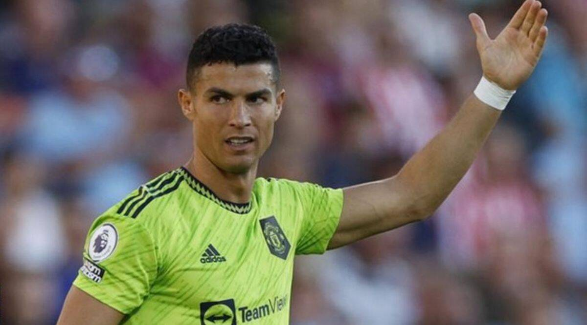
Former Manchester United player Cristiano Ronaldo has reportedly signed for Saudi Arabian club Al Nassr on a 2-year deal, according to AlArabiya_Brk.
The tweet from Al Arabiya states: “Al-Nassr Saudi Arabia officially contracts with Cristiano Ronaldo for two seasons.”
Ronaldo has been a free agent since terminating his contract with Manchester United in November after a controversial interview with Piers Morgan.
Former Manchester United player Cristiano Ronaldo has reportedly signed for Saudi Arabian club Al Nassr on a 2-year deal, according to AlArabiya_Brk.
The tweet from Al Arabiya states: “Al-Nassr Saudi Arabia officially contracts with Cristiano Ronaldo for two seasons.”
Ronaldo has been a free agent since terminating his contract with Manchester United in November after a controversial interview with Piers Morgan.
Mateo Kovacic and Hakim Ziyech back for Chelsea
....
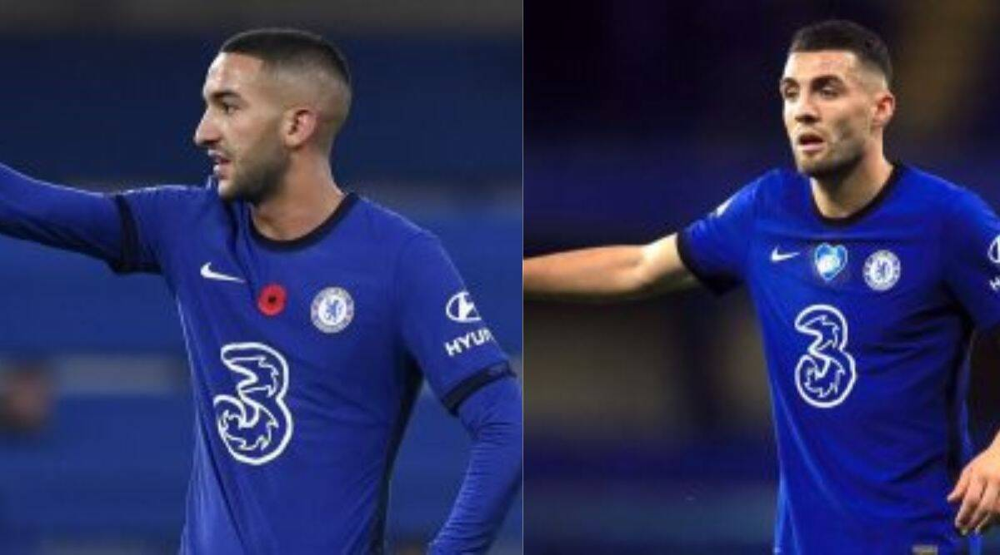
Chelsea will have Mateo Kovacic and Hakim Ziyech back in their squad for their New Year’s Day trip to Nottingham Forest after both returned to training following the World Cup.
Both were given extra time to recover after their countries — Croatia and Morocco — reached the semi-finals and contested the third and fourth place playoff match. The duo were not available for Chelsea’s Premier League win against Bournemouth on Tuesday, but manager Graham Potter confirmed they are ready for the trip to struggling Forest.
“Both of those guys will be back,” Potter said, although he confirmed that keeper Edouard Mendy is a doubt because of an injury picked up playing for Senegal at the World Cup.
“We’ll see how he is over the next few days. He has a problem with a bone that he picked up at the World Cup and needed a little bit of time,” Potter said.
BCCI thanks PM Modi after he called up Rishabh Pant’s family and inquired about cricketer’s health
....
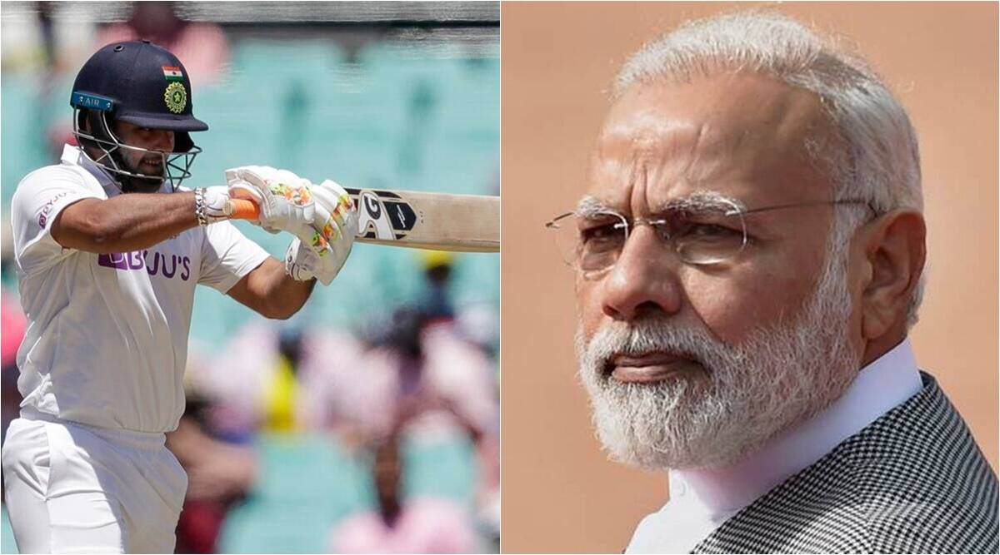
The Board of Control for Cricket in India (BCCI) on Friday said that Prime Minister Narendra Modi had called up Rishabh Pant’s family and inquired about his health following his car accident on Friday morning.
“The Honorable Prime Minister of India Shri @narendramodi ji called up Rishabh Pant’s family and inquired about his health following his car accident this morning. We thank the Prime Minister for this gesture and his soothing words of assurance,” the BCCI official account tweeted.
Earlier, the PM had tweeted that he was distressed after hearing the news of the accident. “Distressed by the accident of noted cricketer Rishabh Pant. I pray for his good health and well-being,” his official handle had posted.
Feisty Goa hold Karnataka for draw
....
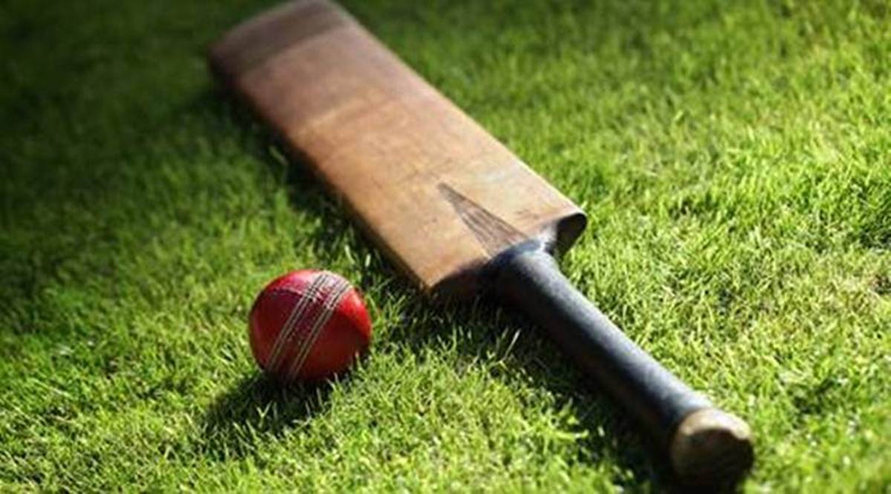
Goa’s batters dished out a gritty display on Day 4 to deny Karnataka an outright win. Goa skipper Darshan Misal (95) extended his vigil and put on 99 runs for the ninth wicket with Lakshay Garg (38).
Brief scores: Karnataka 603/7 dec drew with Goa 373 (Darshan Misal 95, Suyash Prabhudesai 87, Siddhesh Lad 63; V Vyshak 3/60, Shubang Hegde 3/80, K Gowtham 3/140) & 105/3 (Suyash Prabhudesai 61 n.o).
Nadeem spins Jharkhand to win
Shahbaz Nadeem bagged his 26th five-wicket haul in first-class cricket as Jharkhand thrashed Services by nine wickets at Jamshedpur and picked up six points.
Erik Ten Hag says Manchester United need to strengthen squad with quality signings
....
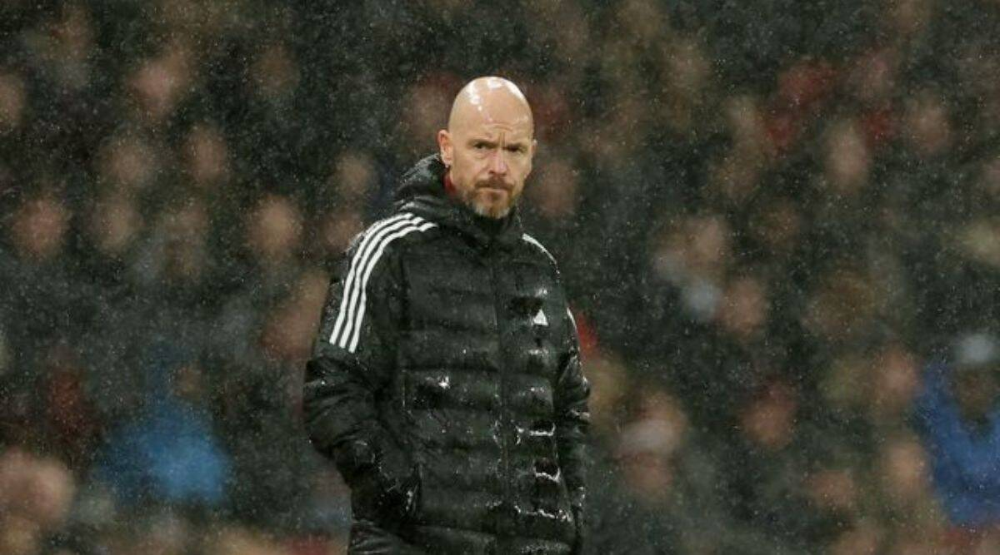
Manchester United boss Erik ten Hag said the Premier League club need reinforcements up top to remain competitive on all fronts, but added that any signing in January would only be completed if the terms match their “sporting and financial criteria”.
United are light on attacking firepower and will be looking to plug the gap left by Cristiano Ronaldo following his departure from the club in the wake of an explosive interview with TalkTV. British media reported that United were chasing Dutch forward Cody Gakpo, before Liverpool sealed the deal and signed him for a reported initial fee of 37 million pounds ($44.69 million) on Wednesday.
When asked if he would be okay with United failing to sign a forward during the January window, Ten Hag told reporters, “we have the players who are matching our criteria. But with all the games that are coming, it is tough competition in all the leagues.
“If you want to also be in all the leagues and keep playing in all the leagues by winning games and cups as well, you need players, you need numbers to cover,” Ten Hag added, speaking before Saturday’s league game at Wolverhampton Wanderers.
Saurashtra complete formalities to post historic win in Mumbai
....
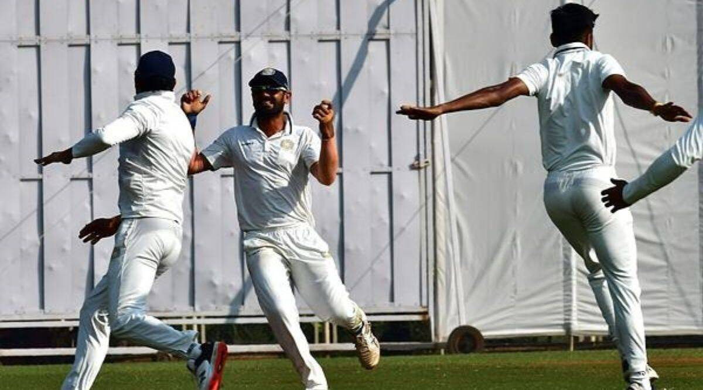
Saurashtra registered their maiden Ranji Trophy win against Mumbai as they beat a star-studded line up by 48 runs on the final day on Friday. On Day 4 of the third round fixture, Mumbai needed 62 runs to win while Saurashtra needed two wickets at the MCA-BKC ground.
And as the play got underway on Friday, Saurashtra took only 30 minutes to take the remaining two wickets and went home with six points. After drawing their first two matches, this was Saurashtra’s first win of the season and they are third in the table with 12 points behind Mumbai (13) and Maharashtra (13).
Jayesh Odedra, a former Saurashtra player and now coach of the team, was lost for words as he couldn’t believe that his team had beaten Mumbai in their own den despite missing Jaydev Unadkat and Cheteshwar Pujara. To put things in perspective as to how much the win meant to Odedra, at the end of the game he went to the pitch and took a pinch of mud and kept it in his pocket.
Later in the day, Odedra was emotional speaking about the special win. “It’s a pretty emotional, special moment. We talked about it yesterday (Thursday), we tried to get data from the Saurashtra Cricket Association as well. To my knowledge, no team from Saurashtra has scored an outright win against Mumbai. It was a really good team effort where each and every individual contributed. We were missing our star players — Pujara and Unadkat — but we had self-belief and unity. I still can’t get out of it. I even took some mud from the wicket (here), because I know that it’s a big thing when you win against Mumbai in Mumbai,” Odedra said